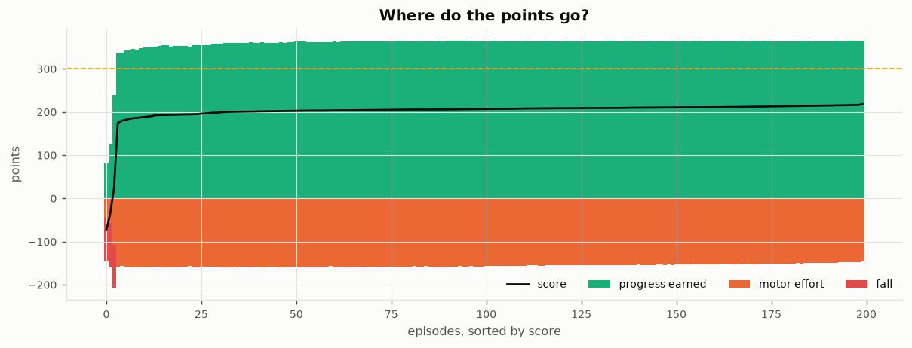
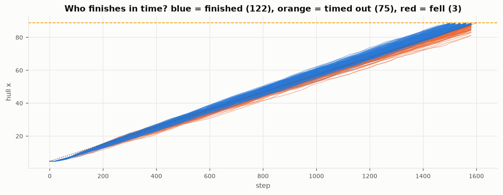
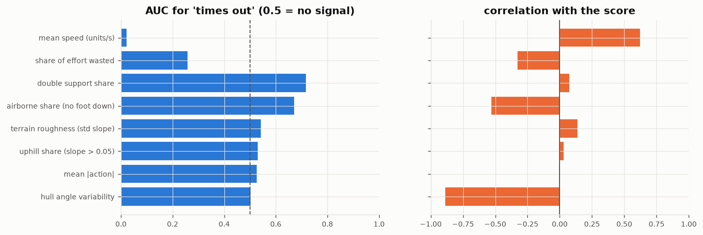
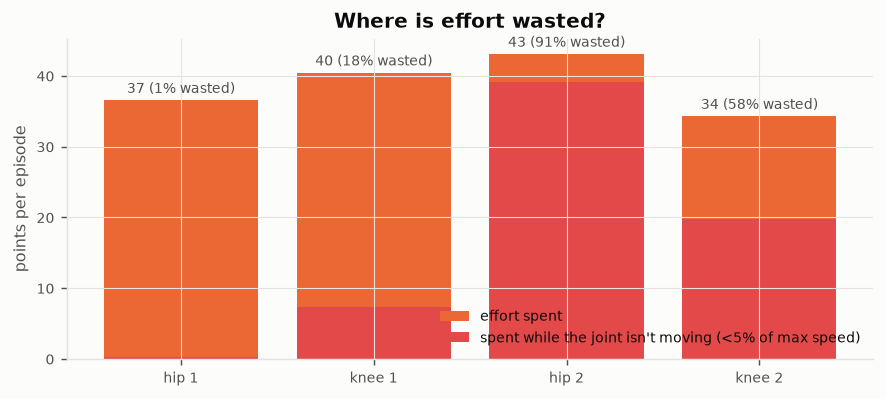

← Bipedal CMA-ES · fall analysis
Why the walker stays below 300. 200 analysis tracks (seeds 30000000+, never used in training or selection), full episodes, raw reward. Mean 201.8; finished 122, timed out 75, fell 3. Effort cost = 0.028 × |action| per joint per step.
| signal (per episode) | median | AUC for time-out | corr. with score |
|---|---|---|---|
| mean speed (units/s) | 2.6494 | 0.022 | 0.62 |
| mean |action| | 0.885 | 0.525 | -0.006 |
| share of effort wasted | 0.4309 | 0.258 | -0.326 |
| terrain roughness (std slope) | 0.0536 | 0.541 | 0.135 |
| uphill share (slope > 0.05) | 0.1748 | 0.531 | 0.031 |
| hull angle variability | 0.1414 | 0.501 | -0.889 |
| airborne share (no foot down) | 0.4504 | 0.671 | -0.529 |
| double support share | 0.0649 | 0.717 | 0.072 |
Each column is one episode: green = points earned by moving forward, orange = spent on motor effort, red = fall penalty; the black line is the score. On average it earns 358 and spends 154 on effort. The dashed line is 300.

Hull position over each episode. The dotted line is the pace needed to finish exactly at step 1600; the dashed line is the finish. Time-outs end at x ≈ 87.2 on average, 1.5 short of the line.

Per-episode signals. Left: how well each one separates time-outs from finishes (AUC; below 0.5 means low values go with time-outs). Right: its correlation with the score across all episodes.

Average effort cost per joint, and the part spent while that joint is barely moving: torque that pushes against a joint limit or the ground without producing motion. In total 67 of 154 points (43%) go to joints that aren't moving.
